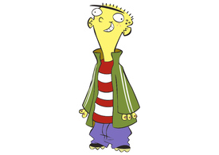
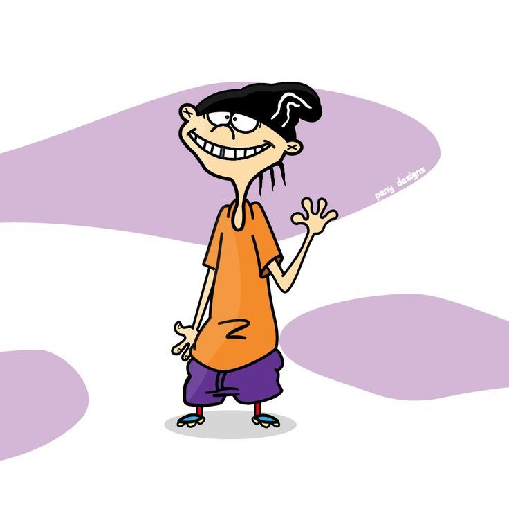
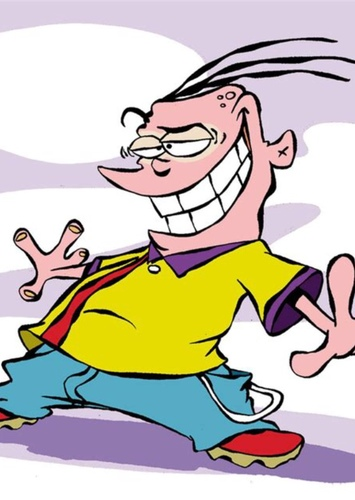

Ed, Edd n Eddy is an animated television series created by Danny Antonucci for Cartoon Network. The series revolves around three friends named Ed, Edd (nicknamed "Double D" to avoid confusion with Ed), and Eddy—collectively known as "the Eds"—who are voiced by Matt Hill, Sam Vincent and Tony Sampson respectively. They live in a suburban cul-de-sac in the fictional town of Peach Creek along with fellow neighbourhood children Kevin, Nazz, Sarah, Jimmy, Rolf, Jonny, and the Eds' female adversaries, the Kanker Sisters, Lee, Marie and May.
Ed, Edd n Eddy became one of Cartoon Network's most successful original series. It won a Reuben Award, two Leo Awards and a SOCAN Award, and was also nominated for another four Leo Awards, an Annie Award and two Kids' Choice Awards. The show attracted an audience of 31 million households, was broadcast in 120 countries,[3] and proved to be popular among children, teenagers, and adults. The series has also included spin-off media such as video games, DVD releases, and a series of books and comic books featuring characters from the series.
Antonucci showed the theme song to the studios when first pitching the series, thinking it would be better than only looking at drawings.[6] It was inspired by the Bob Crosby and The Bob Cats song "Big Noise from Winnetka," which was whistled, something Antonucci enjoyed doing as a child.[6] Composed by Patric Caird, who created all the music in the series, Antonucci performed the whistling himself.[6] Paul Boyd created the show's title sequence.[13] The music of Ed, Edd, n Eddy is heavily influenced by 1930s and 1940s jazz and jump blues, rockabilly, boogie woogie, and the rock and roll of the 1950s.

Ed (Matt Hill) is the strong and dim-witted yet kind-hearted dogsbody of the group.Ed enjoys buttered toast, gravy, cereal (namely Chunky Puffs), pudding skin, chickens, comics and monster movies.

Edd (Samuel Vincent) is the smartest of the Eds and the most polite, mature, curious, and somewhat ironic. As a result, he is more socially accepted by the rest of the kids than Ed and Eddy, usually acting as a peacemaker or offering the rest of the kids advice

Eddy[a] (Tony Sampson in the entire Ed, Edd n Eddy franchise; James Arnold Taylor in FusionFall) is the self-appointed leader of the Eds. He is arrogant, self-centered, ignorant, loudmouthed, immature, greedy, and hot-tempered. He has pink/purple skin, with three long black hairs growing from his head, and his wardrobe consists usually of a yellow and red bowling shirt, blue jeans, and red shoes. He loves money, jawbreakers (which he likes to spend his ill-earned money on), dirty magazines (as hinted in "Luck of the Ed"), his room, and Chunky Puffs